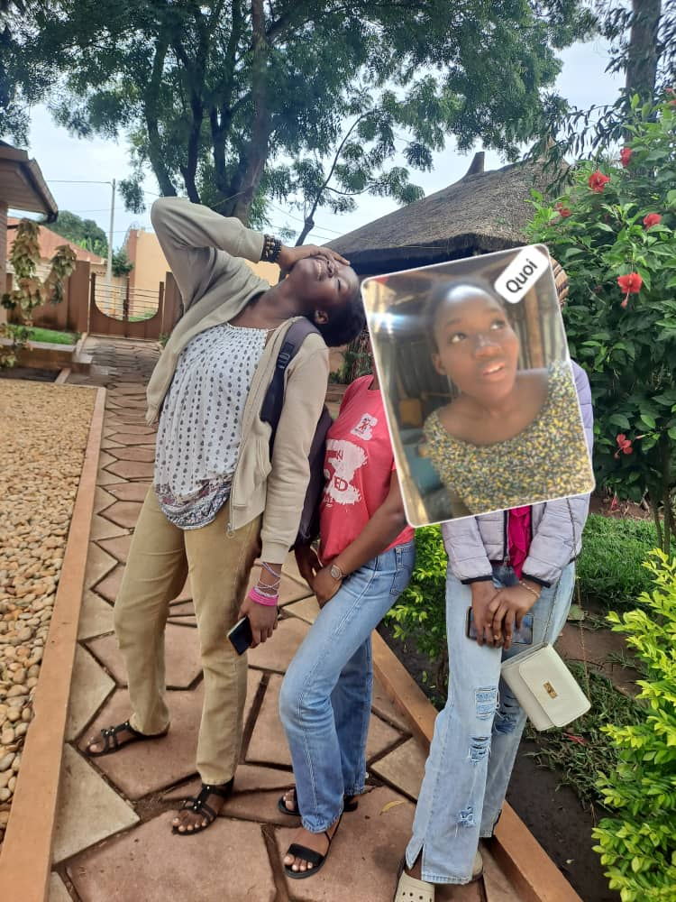
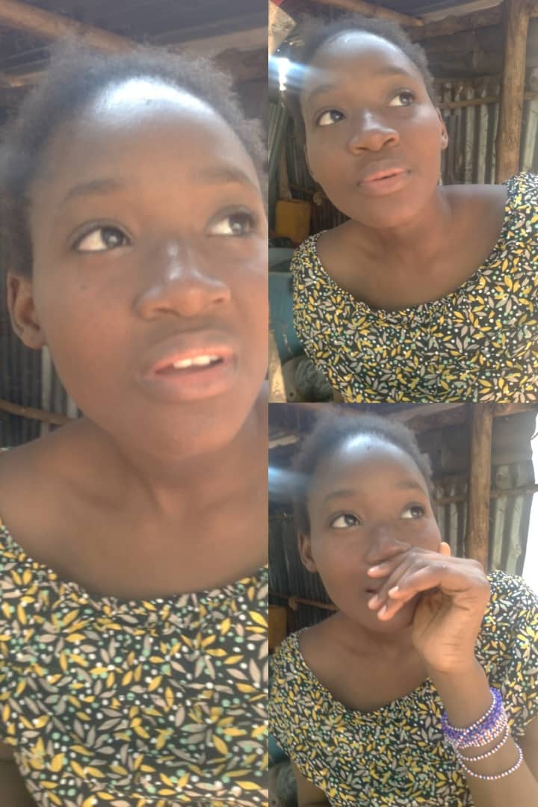

Une enfant très turbulente, agressive et qui parle trop et qui cherche toujours à contredire son merveilleux et génial cousin.
De plus, elle est toujours en train de chercher des positions rocambolesques pour prendre des photos

(par ailleurs elle croit que ses photos sont graves jolies, or si ce n'est pas elle-même et puis la caméra, il n’y a rien).
Sans parler du fait qu'elle se prend trop pour la photographe du siècle alors que c'est juste ses sujets qui sont trop photogéniques.
Aussi, très important de noter que c'est une manipulatrice très avancée. Eh oui, elle m'a d'ailleurs déjà embobiné plus d'une fois et j'en suis peu fier.
Sérieusement, regardez sa tête :

Comment celle-là va me blaguer et puis je vais tomber dedans ?
Mais bon, malgré tout ça, c'est quand même une chic fille sur qui on peut compter (des fois et faut pas croire qu'elle est d'une grande aide non plus),
elle fait attention aux autres (y paraît) et aime beaucoup sa famille (je dis ça mais j'en sais rien en vrai). Une chrétienne fervente 💪😎
qui œuvre pour le bien des autres (bof hein) à tel point qu'elle a carrément décidé d'étudier la santé des gens (ou un truc comme ça, me demandez pas moi-même j'en ai aucune idée).
Bref, c'est une occasion spéciale qui m'a poussé à faire un paragraphe entier de compliments pour une personne que de base je préfère emmerder.
Longue vie à toi et que Dieu te bénisse, même si j'en ai rien à foutre 🌟🌟✨🙌🎉💯🔥❤️🔥.